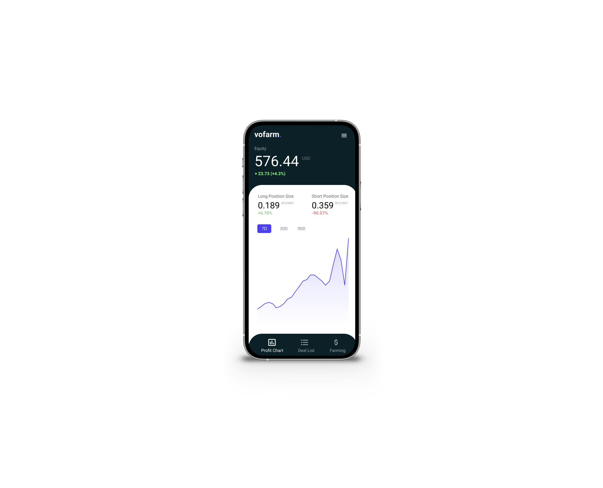

Private Project
UI & UX Design
When you trade with crypto currencies you are forced to watch the market and adapt your strategy multiple times. What about having a bot doing your leverage trading, adapting to the market, smart and fast?
With the Volatility Faming self service tool user can now connect their wallet to a smart bot which will leverage all investments.